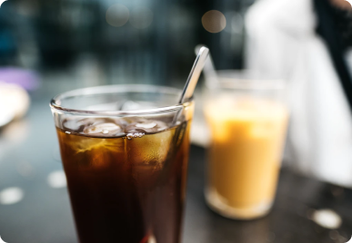

Все статьи
-

Путешествие в Берлин в августе
Летний месяц я провела в столице Германии вместе с друзьями.
-

Где выпить колдбрю в Москве
Собрала для вас список любимых кофеен,ок.
-
Прочитано: книжные рекомендации
Рассказываю о прочитанных за последнее время книгах: фавориты и провалы.
-

Снимки на плёнку
Поделилась с вами весенними фотографиями, и секретами удачных снимков.
-

Домашний чизкейк
Что может быть лучше чизкейка с сезонными ягодами? Только домашний чизкейк!